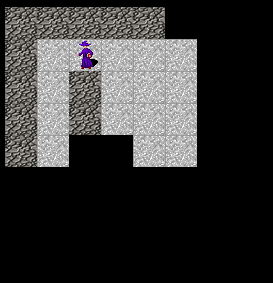

Haskell roguelike - Sticky light
Remembering what was seen
In the previous chapter the player could only see what was in their immediate fov. This is often used for example if you are in a dark room and are carrying a light source etc. Another option is to reveal tiles in the player’s fov and not hide them again as the player moves. This feels more like its about discovery than a light source. You can choose which style suites your game best or use both in different circumstances, e.g. different rooms / levels.
I’m going to change the style for the remainder of the tutorial to use “sticky light”, once a tile is revealed it remains so regardless of fov.

The actor is given a new property acFovHistory which uses a Data.Set to store all world coordinates that were ever in the fov.
11_sticky_light/src/GameCore.hs (33 to 33)
updateActorFov is changed to update the acFovHistory each time a new fov is calculated. It does this by passing the fov positions as a list to Data.Set.union to combine them with the existing set.
11_sticky_light/src/GameEngine.hs (423 to 428)
updateActorFov :: World -> Actor -> Actor
updateActorFov w a =
-- Calculate field of view
let fov = calcFov (a ^. acFovDistance) (isTransparent $ w ^. wdMap) (a ^. acWorldPos) in
a & acFov .~ Just fov
& acFovHistory %~ Set.union (Set.fromList $ flatFov (Just fov))All that is then needed is for the history to be used in darknessFovOverlay. I.e. remove the positions in acFovHistory from the blackBg map
11_sticky_light/src/GameEngine.hs (575 to 591)
darknessFovOverlay :: Player -> Actor -> Map PlayerPos Tile
darknessFovOverlay player actor =
let
(screenWidth, screenHeight) = player ^. plScreenSize
-- Create a full grid of darkness
blackBg = Map.fromList [ (PlayerPos (x, y), E.getTile E.Dark)
| x <- [0..(screenWidth - 1)]
, y <- [0..(screenHeight - 1)]
]
lightAt = worldCoordToPlayer (player ^. plWorldTopLeft) <$> flatFov (actor ^. acFov)
seen = worldCoordToPlayer (player ^. plWorldTopLeft) <$> Set.toList (actor ^. acFovHistory)
in
-- Remove the darkness overlay at any position that is to be lit
-- I.e. any position in the field of view, or previously in the field of view
foldr Map.delete blackBg $ lightAt <> seenChapters
Changes
src/GameCore.hs
diff -w -B -a -d -u -b --new-file 10_fov/src/GameCore.hs 11_sticky_light/src/GameCore.hs
--- 10_fov/src/GameCore.hs
+++ 11_sticky_light/src/GameCore.hs
@@ -28,10 +28,11 @@
, _acEntity :: !Entity
, _acWorldPos :: !WorldPos
, _acStdGen :: !Rnd.StdGen
-
, _acFov :: !(Maybe [(WorldPos, [WorldPos])])
- , _acFovDistance :: !Int
+ , _acFovHistory :: !(Set WorldPos)
+
+ , _acFovDistance :: !Int
}
data Player = Player { _plConn :: !Host.Connection
src/GameEngine.hs
diff -w -B -a -d -u -b --new-file 10_fov/src/GameEngine.hs 11_sticky_light/src/GameEngine.hs
--- 10_fov/src/GameEngine.hs
+++ 11_sticky_light/src/GameEngine.hs
@@ -5,6 +5,7 @@
module GameEngine where
import Protolude hiding (Map)
+import qualified Data.Set as Set
import Data.Map.Strict (Map)
import qualified Data.Map.Strict as Map
import qualified Data.List as Lst
@@ -142,6 +140,7 @@
, _acStdGen = std
, _acFovDistance = 3
, _acFov = Nothing
+ , _acFovHistory = Set.empty
}
mkEnemyActor aid e (x, y) =
@@ -152,6 +151,7 @@
, _acStdGen = std
, _acFovDistance = 2
, _acFov = Nothing
+ , _acFovHistory = Set.empty
}
@@ -431,10 +420,12 @@
Nothing
-
updateActorFov :: World -> Actor -> Actor
updateActorFov w a =
- a & acFov .~ Just (calcFov (a ^. acFovDistance) (isTransparent $ w ^. wdMap) (a ^. acWorldPos))
+ -- Calculate field of view
+ let fov = calcFov (a ^. acFovDistance) (isTransparent $ w ^. wdMap) (a ^. acWorldPos) in
+ a & acFov .~ Just fov
+ & acFovHistory %~ Set.union (Set.fromList $ flatFov (Just fov))
@@ -603,10 +584,11 @@
]
lightAt = worldCoordToPlayer (player ^. plWorldTopLeft) <$> flatFov (actor ^. acFov)
+ seen = worldCoordToPlayer (player ^. plWorldTopLeft) <$> Set.toList (actor ^. acFovHistory)
in
-- Remove the darkness overlay at any position that is to be lit
- foldr Map.delete blackBg lightAt
-
+ -- I.e. any position in the field of view, or previously in the field of view
+ foldr Map.delete blackBg $ lightAt <> seen